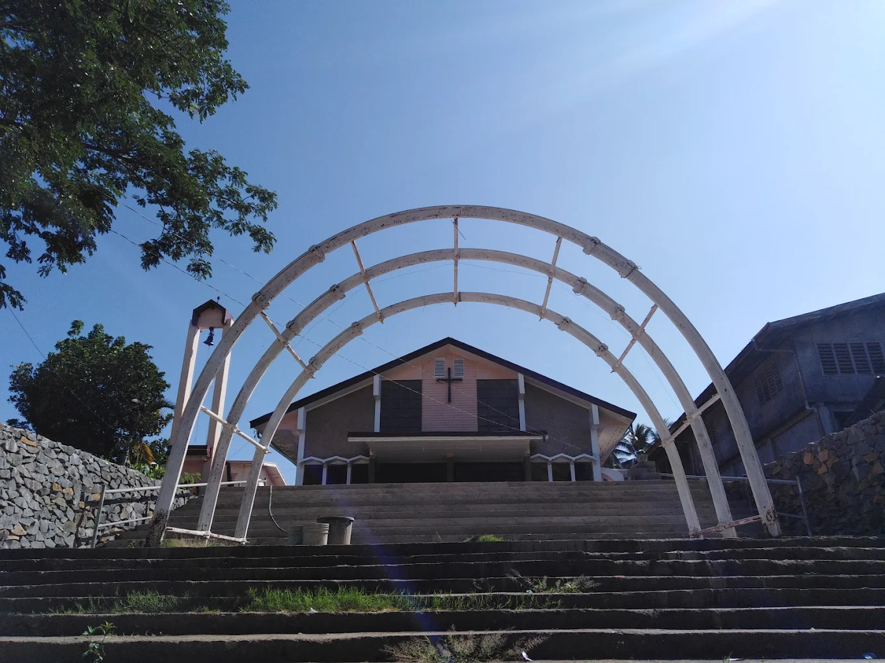
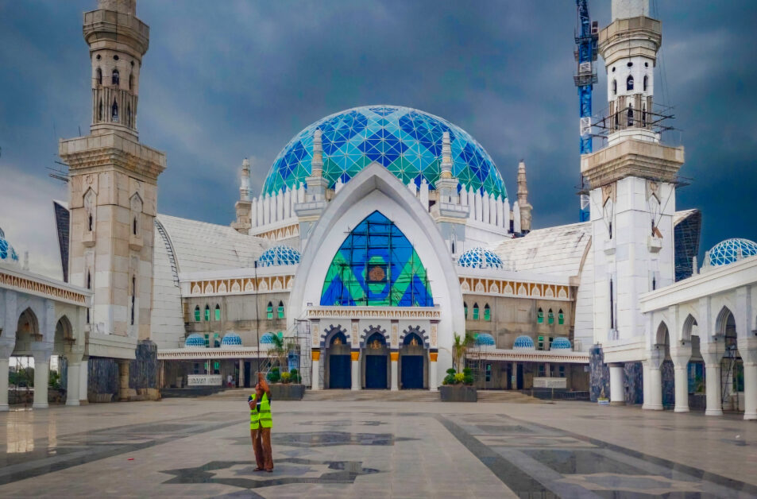

Overview
Religious tourism in Zamboanga Sibugay offers a path to spiritual reflection through its historic churches and serene pilgrimage sites. The province is home to diverse faith traditions that coexist in harmony, reflected in the architectural beauty of its cathedrals and the quiet devotion found in its rural grottos.
Travelers are invited to experience local rituals, participate in patronal fiestas, and find peace in the sacred landscapes that have served as foundations of faith for generations.
Popular Religious Sites
St. Joseph the Worker Cathedral (Ipil)

The St. Joseph the Worker Cathedral is the most significant landmark in the capital of Ipil. As the seat of the Catholic Prelature, it serves as the spiritual heart for thousands of Sibugaynons. The cathedral is known for its welcoming atmosphere and its role as a sanctuary during the province's historical milestones, making it a must-visit for those seeking both peace and a connection to local heritage.
Santo Niño Parish (Malangas)

The Santo Niño Parish in the coastal municipality of Malangas is a center of faith for the local community. Known for its vibrant annual feast honoring the Holy Child, the church serves as a spiritual landmark in this historic mining and fishing town. It offers a peaceful space for reflection and is a key stop for those exploring the southeastern coast of Zamboanga Sibugay.
Sadik Grand Mosque

Representing the rich Islamic heritage of the region, the Sadik Grand Mosque in Naga stands as a majestic center of faith and community life. Its distinct architecture and serene atmosphere showcase the traditional Mindanaoan Islamic influence, serving as a powerful symbol of the cultural diversity and spiritual devotion that defines Zamboanga Sibugay.